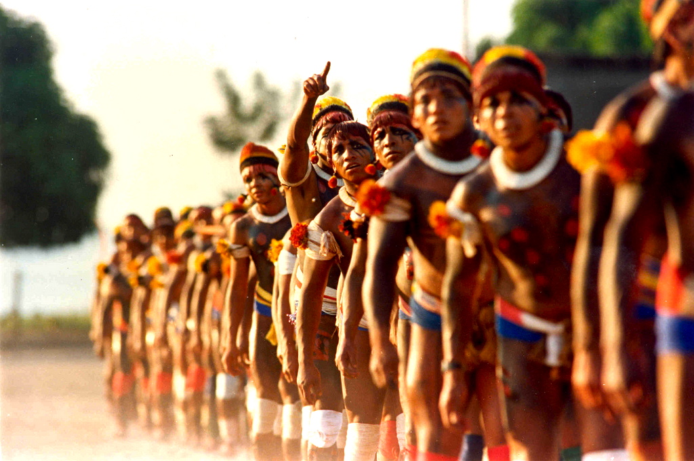
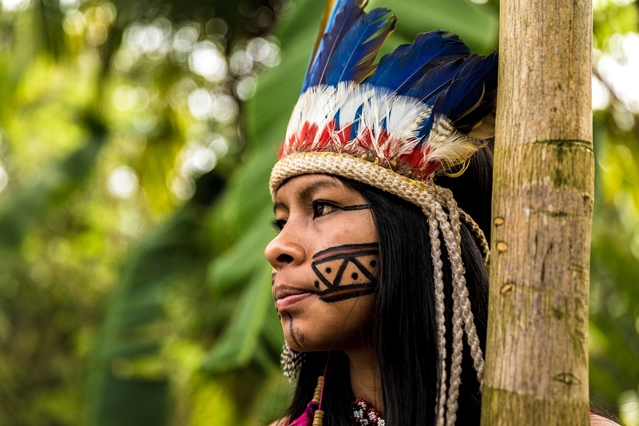
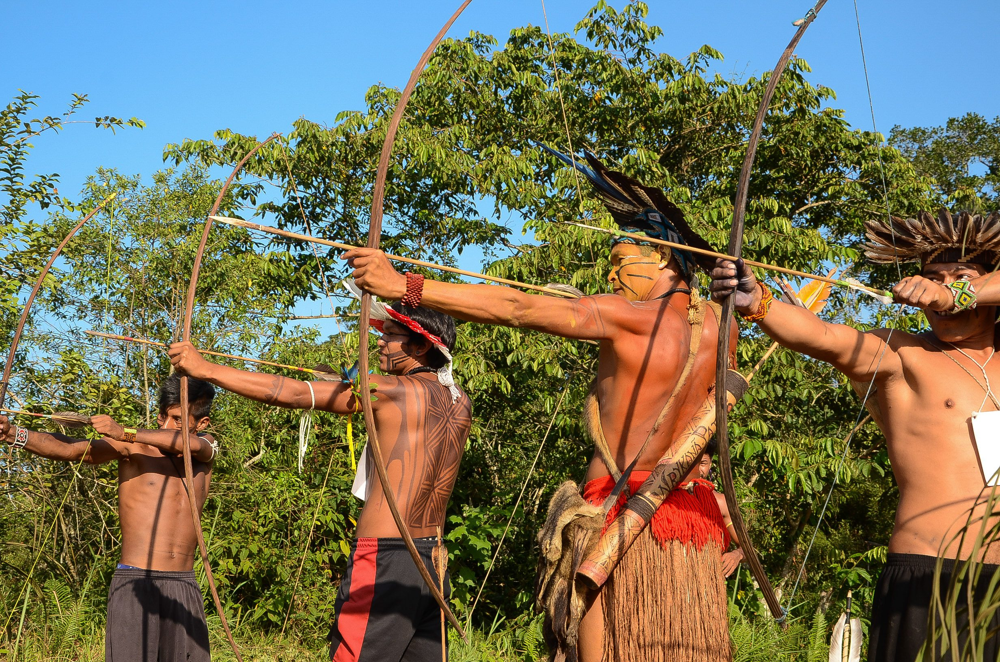
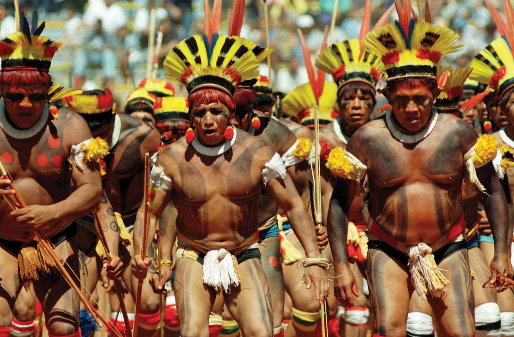
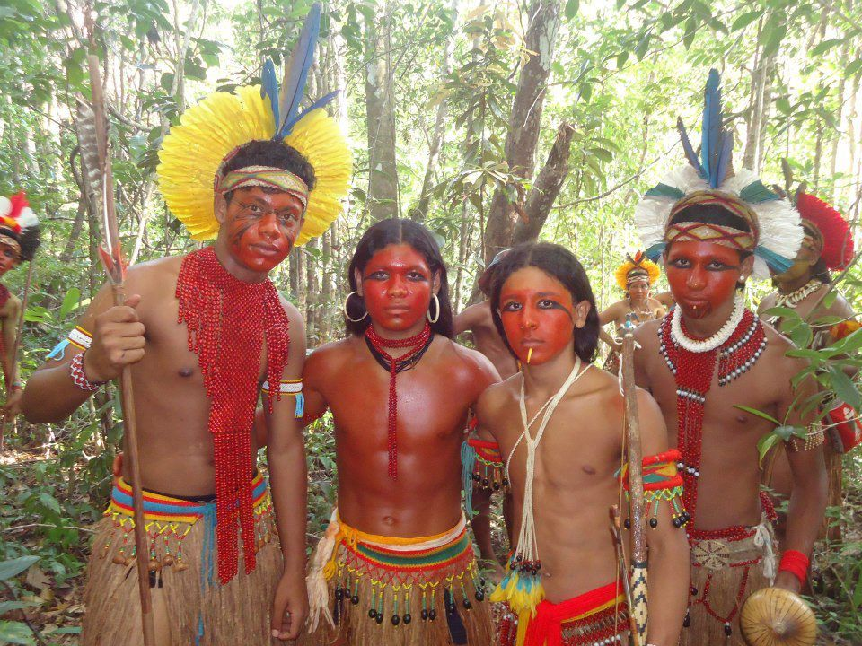
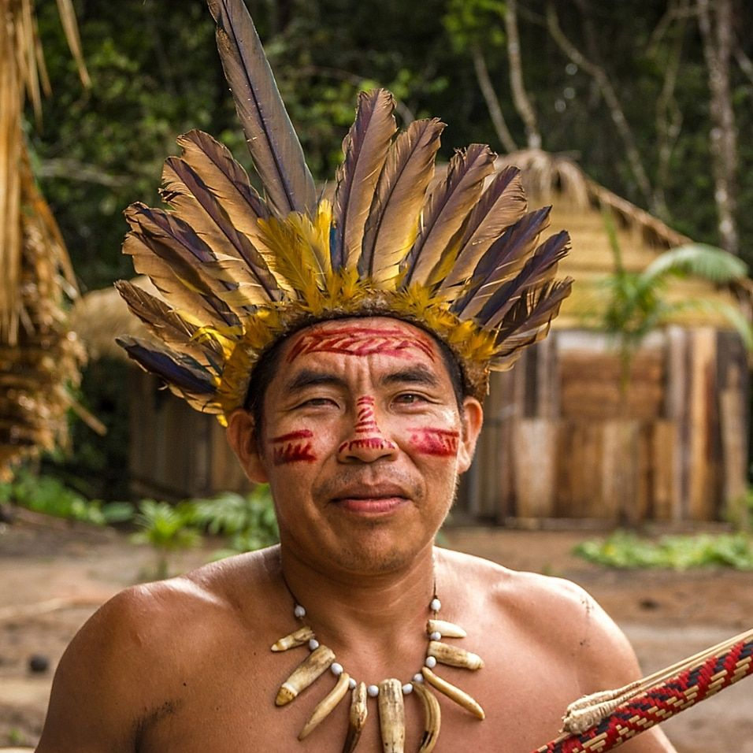

Povo
Os guaranis formam o maior povo indígena, em quantidade de indivíduos, vivendo no Brasil. Somente no país, há cerca de 57 mil pessoas desta etnia, conforme o IBGE (Instituto Brasileiro de Geografia e Estatística).
Caracteristicas
A caça e a pesca também são atividades importantes. Os Guaranis têm uma espiritualidade profunda, centrada em mitos e lendas, e realizam diversos rituais religiosos. A sua organização social é comunitária, com decisões tomadas coletivamente. Eles valorizam muito a relação harmoniosa com a natureza, que consideram sagrada e essencial para seu modo de vida. Dependendo do local, os guaranis também são conhecidos como Chiripá, Kainguá, Monteses, Baticola, Apyteré, Tembekuá, entre outras nomenclaturas. Porém, eles se autodenominam “Avá”, que significa “pessoa” na língua guarani. O povo guarani se divide em diversos subgrupos, predominantes nas diversas regiões que habitam. Embora reconheçam sua origem, história e cultura em comum, esses grupos são diferenciados internamente pela maneira como manifestam a cultura, a organização social e política, a língua e, ainda, a forma de praticar a religião. No Brasil, os guaranis se dividem entre Mbya, Kaiowa e Ñandeva. Os guaranis são agricultores, coletores e caçadores. O espaço físico onde habitam é denominado "tekoha". Para os guaranis, tekoha é o lugar físico onde é possível realizar modo de vida guarani, contemplando suas relações familiares, sociais e com o ambiente. Esse conceito está no cerne da maioria das disputas fundiárias vivenciadas pelo povo guarani no Brasil. Isso porque os guaranis têm, historicamente, a característica de serem um povo semi-nômade, o que serviu de pretexto para negar-lhes o direito à terra diante dos interesses econômicos dos não-indígenas.
Onde vivem e sua cultura
Os Guaranis habitam principalmente as regiões do Paraguai, Brasil, Argentina e Bolívia. No Brasil, eles estão distribuídos principalmente nos estados do Mato Grosso do Sul, Paraná, Santa Catarina e Rio Grande do Sul. Os Guaranis tradicionalmente vivem em aldeias comunitárias, onde praticam agricultura, caça e pesca. Sua cultura é rica em tradições e idiomas próprios, com um forte vínculo com a terra e a natureza.
Os indígenas guaranis, também chamados de "grande povo", acreditam que foram criados por Tupã para admirar a terra, através da palavra. A mitologia guarani é bastante extensa e complexa, incluindo desde mitos de criação até narrativas sobre seu contato com os brancos. A organização social e os cantos estão entre as mais evidentes manifestações culturais do povo guarani. Para eles, a terra, tekoha, é parte integrante da família. Os cânticos guaranis são entoados como uma forma de demonstrar aos deuses que existem sobre a terra. Sua música também é utilizada para o controle das forças da natureza, como falta ou excesso de chuva. Os cantos são entoados ao som de cabaças, transformadas em instrumentos musicais.
Localização
O Guarani é uma língua indígena falada principalmente no Paraguai e em partes do Brasil, Argentina e Bolívia. É uma das línguas oficiais do Paraguai, ao lado do espanhol, e tem uma importância cultural significativa na região. A língua Guarani pertence à família linguística Tupi-Guarani, que é uma das maiores famílias linguísticas indígenas das Américas. É composta por diversos dialetos, com variações regionais de vocabulário, pronúncia e gramática. O Guarani é uma língua aglutinante, o que significa que as palavras são formadas pela aglutinação de morfemas, ou seja, unidades mínimas de significado. Possui um sistema fonológico relativamente simples, com poucos sons e uma estrutura silábica predominante CV (consoante-vogal). Uma característica marcante do Guarani é sua rica tradição oral, transmitida ao longo das gerações por meio de histórias, canções e rituais. É uma língua que está intimamente ligada à cultura e à identidade dos povos Guarani, sendo utilizada em diversos contextos sociais, religiosos e artísticos. Apesar de ter sido influenciado pelo espanhol e pelo português ao longo dos séculos, o Guarani continua a ser amplamente falado e preservado pelas comunidades indígenas e também por falantes não indígenas na região. Esforços estão sendo feitos para promover o ensino e o uso do Guarani nas escolas e na mídia, como forma de fortalecer a identidade cultural e linguística dos povos Guarani.
Origem antes da chegada dos colonizadores
Os Guarani são um grupo étnico indígena que habita principalmente regiões do Brasil, Paraguai, Argentina e partes do Uruguai. Sua origem remonta a milhares de anos, com evidências arqueológicas sugerindo que eles migraram para a região do atual Paraguai por volta de 2000 a.C. No entanto, as origens exatas dos Guarani são objeto de debate entre os pesquisadores. Alguns estudiosos acreditam que os Guarani são descendentes de grupos indígenas que habitavam a região amazônica e que migraram para o sul em busca de novas terras e recursos. Outros sugerem que eles podem ter se originado na região do atual Paraguai e se espalhado para outras áreas ao longo do tempo. Antes da chegada dos colonizadores europeus na América do Sul, os Guarani viviam em sociedades agrícolas organizadas, cultivando principalmente mandioca, milho e feijão. Eles também praticavam a caça, a pesca e a coleta de alimentos na floresta tropical. A sociedade Guarani era caracterizada por sua organização em aldeias lideradas por chefes conhecidos como caciques. Eles tinham uma forte conexão com a natureza e acreditavam em divindades ligadas aos elementos naturais, como o sol, a lua e a terra. Sua religião era baseada em rituais xamânicos e em uma crença no poder dos espíritos. Com a chegada dos colonizadores europeus na região a partir do século XVI, os Guarani foram submetidos a pressões e conflitos que tiveram um impacto significativo em suas comunidades e culturas. Missionários jesuítas estabeleceram missões na região, onde os Guarani foram convertidos ao cristianismo e submetidos a um sistema de trabalho forçado. Apesar das adversidades enfrentadas ao longo da história, os Guarani conseguiram preservar muitos aspectos de sua cultura e identidade. Hoje, eles continuam a lutar pela preservação de suas terras, pela proteção de seu meio ambiente e pelo reconhecimento de seus direitos como povos indígenas.
Reservas indígenas guaranis
Entre 1915 e 1928, o SPI (Serviço de Proteção ao Índio) demarcou oito terras para abrigar o território guarani na área que hoje corresponde ao Estado de Mato Grosso do Sul. As áreas totalizavam 18,1 hectares. A estratégia foi usada para que, em pequena disposição de território, os indígenas assimilassem a cultura envolvente (termo da antropologia usado para falar do colonizador). A manutenção dos indígenas nas áreas de proteção foi alterada pela imposição da monocultura na região, na década de 1970. O Mato Grosso do Sul é um dos principais produtores de soja do País. Esse modelo de exploração resulta no esgotamento do terreno em consequência do uso de defensivos agrícolas e da mecanização. A biodiversidade local foi alterada e os deslocamentos de indígenas prosseguiram. Os indígenas Guarani-Kaiowá estão entre os que conseguiram resistir, contudo, foram explorados. Ainda na década de 1980, os Guarani-Kaiowá retomaram a posse de 11 terras tradicionais. Juntas, as áreas totalizam 22,4 mil hectares e a posse foi homologada após a Constituição de 1988. Estudos antropológicos apontam que há mais terras tradicionais pertencentes aos indígenas guaranis. O fim da disputa só ocorre após a homologação do governo federal. Há um impasse entre os indígenas e proprietários de terras na região. Em consequência da disputa, são constantes os conflitos armados nas proximidades das aldeias. Entre 2003 e o primeiro semestre de 2006, 400 indígenas foram assassinados na região. A reserva indígena da cidade de Dourados (MS), conta com 3,5 mil hectares. No local vivem cerca de 20 mil indivíduos de etnias distintas, entre Guarani-Kaiowa, Guarani-Ñandeva e Terenas. Dadas as disputas por terras entre indígenas e fazendeiros, não são raros os conflitos na região.